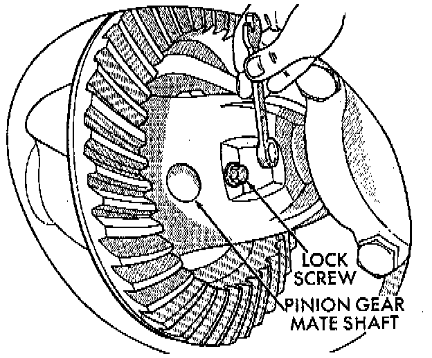
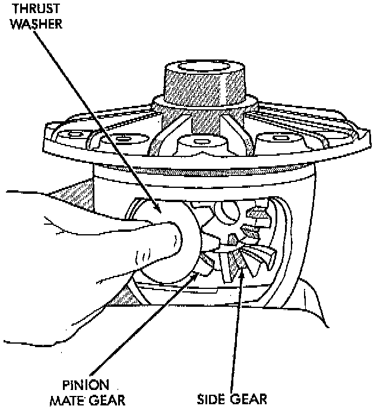

Standard Differential

DISASSEMBLY
1. Remove pinion gear mate shaft lock screw.
2. Remove pinion gear mate shaft.

3. Rotate the differential side gears and remove the pinion mate gears and thrust washers.
4. Remove the differential side gears and thrust washers.
ASSEMBLY
1. Install the differential side gears and thrust washers.
2. Install the pinion mate gears and thrust washers.
3. Install the pinion gear mate shaft.
4. Align the hole in the pinion gear mate shaft with the hole in the differential case and install the pinion gear mate shaft lock screw.
5. Lubricate all differential components with hypoid gear lubricant.